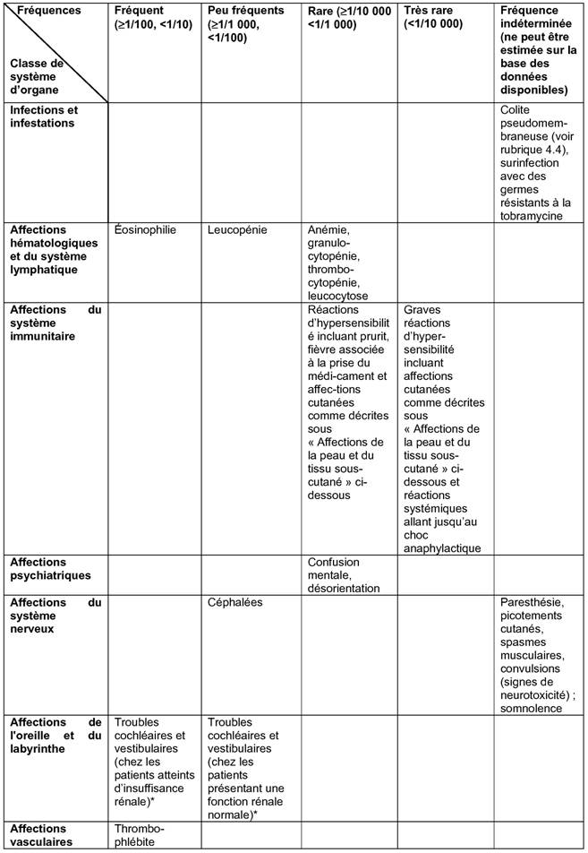
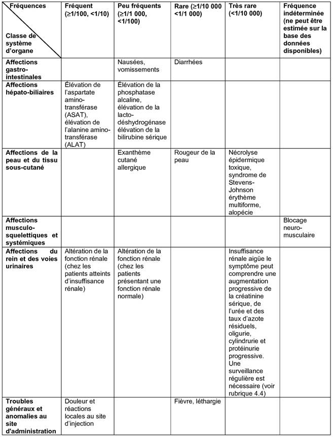

RÉSUMÉ DES CARACTÉRISTIQUES DU PRODUIT
ANSM - Mis à jour le : 09/01/2012
TOBRAMYCINE B. BRAUN 1 mg/ml, solution pour perfusion
2. COMPOSITION QUALITATIVE ET QUANTITATIVE
1 ml de solution contient 1 mg de tobramycine.
Un flacon de 80 ml contient 80 mg de tobramycine.
Excipient: 283 mg de sodium (sous forme de chlorure) par flacon
Pour la liste complète des excipients, voir rubrique 6.1
Solution pour perfusion.
Solution aqueuse limpide et incolore.
4.1. Indications thérapeutiques
Ce médicament est utilisé pour le traitement des infections sévères dues à des bactéries sensibles à la tobramycine (voir rubrique 5.1) lorsque les antibiotiques moins toxiques ne sont pas efficaces.
Dans ces conditions, TOBRAMYCINE B. BRAUN 1 mg/ml solution pour perfusion peut être utilisée pour traiter:
· les infections nosocomiales des voies respiratoires basses, notamment les pneumonies sévères;
· les exacerbations des infections respiratoires basses chez les patients atteints de mucoviscidose;
· les infections urinaires compliquées et récurrentes;
· les infections intra-abdominales;
· les infections de la peau et des tissus mous, notamment les brûlures sévères.
TOBRAMYCINE B. BRAUN 1 mg/ml solution pour perfusion est habituellement administrée en association, le plus souvent avec une béta-lactamine ou avec un antibiotique efficace contre les bactéries anaérobies, en particulier dans les infections mettant en jeu le pronostic vital dues à des bactéries inconnues, dans les infections mixtes par des bactéries aérobies/anaérobies, dans les infections systémiques à Pseudomonas, et chez les patients immunodéprimés (essentiellement en cas de neutropénie).
Il convient de tenir compte des recommandations officielles concernant le bon usage des antibiotiques.
4.2. Posologie et mode d'administration
TOBRAMYCINE B. BRAUN 1 mg/ml solution pour perfusion doit être administrée exclusivement en perfusion intraveineuse. Idéalement, la durée de perfusion sera de 30 minutes, mais elle pourra être prolongée jusqu'à 60 minutes (voir rubriques 5.1 et 5.2).
Posologie
Posologie chez les patients présentant une fonction rénale normale
Adultes et adolescents (âgés de 12 à 17 ans)
Infections sévères:
3 mg/kg de masse corporelle par jour en une dose quotidienne unique ou répartis en doses égales de 1 mg/kg de masse corporelle toutes les 8 heures.
Infections mettant en jeu le pronostic vital:
Jusqu'à 5 mg/kg de masse corporelle en une dose quotidienne unique ou répartis en doses égales de 1,66 mg/kg de masse corporelle toutes les 8 heures (ou éventuellement toutes les 6 heures dans certains cas). La posologie doit être réduite dès que la situation clinique le justifie.
Mucoviscidose:
Chez les patients atteints de mucoviscidose, les propriétés pharmacocinétiques de la tobramycine peuvent être altérées et il peut être nécessaire de porter la dose à 8-10 mg/kg de masse corporelle par jour afin d'atteindre des concentrations sériques thérapeutiques. Etant donné la grande variabilité d'un patient à l'autre, la concentration sérique de la tobramycine devra être surveillée.
Population pédiatrique (patients âgés de plus d'une semaine)
6 à 7,5 mg/kg de masse corporelle par jour en une dose unique ou 2 à 2,5 mg/kg de masse corporelle toutes les 8 heures ou, dans certains cas, 1,5 à 1,9 mg/kg de masse corporelle toutes les 6 heures. Par conséquent, l'utilisation de TOBRAMYCINE B. BRAUN 1 mg/ml solution pour perfusion n'est pas recommandée chez les enfants dont la masse corporelle est inférieure à 12 kg (dose quotidienne unique) et à 32 kg (doses quotidiennes multiples [3 fois par jour]). Les doses par kg recommandées en cas d'infections des voies respiratoires et de mucoviscidose étant plus élevées (8 à 10 mg/kg/jour), TOBRAMYCINE B. BRAUN 1 mg/ml solution pour perfusion peut être utilisée dans ce cas chez les enfants dont la masse corporelle est d'au moins 25 kg (doses quotidiennes multiples).
Volumes quotidiens de perfusion chez les adultes présentant une fonction rénale normale.
|
|
|
Volume quotidien total de perfusion |
|
|||||
|
Dose (par kg de MC par jour) |
Masse corporelle |
50 kg |
60 kg |
70 kg |
80 kg |
90 kg |
100 kg |
|
|
3,0 mg |
|
150 ml |
180 ml |
210 ml |
240 ml |
270 ml |
300 ml |
|
|
3,5 mg |
|
175 ml |
210 ml |
245 ml |
280 ml |
315 ml |
350 ml |
|
|
4,0 mg |
|
200 ml |
240 ml |
280 ml |
320 ml |
360 ml |
400 ml |
|
|
4,5 mg |
|
225 ml |
270 ml |
315 ml |
360 ml |
405 ml |
450 ml |
|
|
5,0 mg |
|
250 ml |
300 ml |
350 ml |
400 ml |
450 ml |
500 ml |
|
|
5,5 mg |
|
275 ml |
330 ml |
385 ml |
440 ml |
495 ml |
550 ml |
|
|
6,0 mg |
|
300 ml |
360 ml |
420 ml |
480 ml |
540 ml |
600 ml |
|
|
6,5 mg |
|
325 ml |
390 ml |
455 ml |
520 ml |
585 ml |
650 ml |
|
|
7,0 mg |
|
350 ml |
420 ml |
490 ml |
560 ml |
630 ml |
700 ml |
|
|
7,5 mg |
|
375 ml |
450 ml |
525 ml |
600 ml |
675 ml |
750 ml |
|
|
8,0 mg |
|
400 ml |
480 ml |
560 ml |
640 ml |
720 ml |
800 ml |
|
L'utilisation d'une pompe à perfusion permet de garantir la précision de la posologie de la TOBRAMYCINE B. BRAUN 1 mg/ml.
Dose quotidienne unique
Habituellement, la tobramycine est administrée en doses fractionnées, toutes les 8 heures. Cependant, des études expérimentales et cliniques ont montré qu'une dose quotidienne unique, comparée à des doses quotidiennes multiples, présente des avantages en termes d'efficacité et de sécurité. La tobramycine dispose d'un effet post-antibiotique durable (voir rubrique 5.1). De récentes études in vitro et in vivo ont montré que le passage des aminosides dans le cortex rénal est limité et donc, lorsque le pic de concentration sérique de la tobramycine est plus élevé (après une dose quotidienne unique), la quantité d'aminosides stockés dans les reins est moins importante qu'avec les doses multiples classiques. Par ailleurs, lorsque le produit est utilisé en association (par ex., avec des béta-lactamines à la dose normale), il est possible d'administrer la dose quotidienne totale en une dose unique.
Il est recommandé d'administrer TOBRAMYCINE B. BRAUN 1 mg/ml en une dose quotidienne unique, sauf en cas d'immunodéficience (neutropénie, par exemple), d'insuffisance rénale sévère, de mucoviscidose, d'ascite, de brûlures étendues (plus de 20 % de la peau) et de grossesse (voir rubrique 5.2).
Posologie chez les patients présentant une insuffisance rénale
Après une dose initiale de 1 mg/kg de masse corporelle, la dose doit être ajustée, soit en réduisant la dose administrée toutes les 8 heures (schéma 1) soit en allongeant l'intervalle entre 2 doses normales (schéma 2, voir le tableau ci-dessous). S'il n'est pas possible de mesurer directement les concentrations sériques de la tobramycine, l'ajustement doit être fait en fonction de la concentration sérique de la créatinine ou de la clairance de la créatinine, étant donné qu'il existe une bonne corrélation entre ces paramètres et la demi-vie de la tobramycine.
Chez les patients atteints d'insuffisance rénale, la dose d'entretien doit être adaptée sur la base de l'état de leur fonction rénale en suivant le schéma ci-dessous:
Traitement d'entretien après une dose initiale de 1 mg/kg (*) selon l'état de la fonction rénale et la masse corporelle du patient:
|
Fonction rénale |
Schéma 1 |
Schéma 2 |
|||
|
|
Ajustement des doses, administrées toutes les 8 heures |
Doses fixes, avec ajustement des intervalles d'administration |
|||
|
Azote uréique (mg/100 ml) |
Créatinine sérique (mg/100 ml ) |
Clairance de la créatinine (ml/min) |
Masse corporelle |
Masse corporelle/dose |
|
|
|
|
|
50-60 kg |
60-80 kg |
50-60 kg: 60 mg |
|
|
|
|
|
|
60-80 kg: 80 mg |
|
Normal |
≤ 1,3 |
≥ 70 |
60 mg |
80 mg |
Toutes les 8 h |
|
21-34 |
1,4-1,9 |
69-40 |
30-60 mg |
50-80 mg |
Toutes les 12 h |
|
35-49 |
2,0-3,3 |
39-20 |
20-25 mg |
30-45 mg |
Toutes les 18 h |
|
50-65 |
3,4-5,3 |
19-10 |
10-18 mg |
15-24 mg |
Toutes les 24 h |
|
66-74 |
5,4-7,5 |
9- 5 |
5-9 mg |
7-12 mg |
Toutes les 36 h |
|
≥ 75 |
≥ 7,6 |
≤ 4 |
2,5-4,5 mg |
3,5-6 mg |
Toutes les 48 h |
(*) En cas d'infection mettant en jeu le pronostic vital, des doses une fois et demie plus élevées que les doses recommandées peuvent être utilisées. Après amélioration de la condition des patients, la posologie devra être réduite à la dose usuelle. La fonction rénale (c.-à-d. le taux d'urée sanguine) doit être stable pour que la clairance de la créatinine puisse être calculée.
Il est également possible de calculer la dose réduite administrée toutes les 8 heures (lorsque le taux de créatinine sérique est stable et connu) en divisant la dose normale recommandée par le taux de créatinine (mg/100 ml) du patient. Pour calculer la fréquence d'administration (en heures), il suffit généralement de multiplier le taux de créatinine sérique du patient (mg/100 ml) par 6.
En présence d'une insuffisance rénale, en cas de traitement à long terme et à dose élevée, chez les nouveau-nés et les jeunes enfants et chez les patients présentant des facteurs de risque supplémentaires de réactions toxiques, la dose doit être contrôlée en mesurant la concentration sérique de la tobramycine et être ajustée, si nécessaire.
La concentration sérique maximale doit être comprise entre 4 et 10 microgrammes/ml; la concentration minimale avant administration de la dose suivante doit être inférieure à 2 microgrammes/ml afin d'éviter tout effet indésirable toxique.
Hémodialyse:
Après chaque séance de dialyse, la dose doit être ajustée individuellement en fonction de la concentration sérique de la tobramycine. Suite à l'hémodialyse, il est généralement recommandé d'utiliser une dose de tobramycine correspondant à la moitié de la dose de charge.
Patients âgés:
La dose d'entretien nécessaire pour atteindre une concentration plasmatique thérapeutique peut être plus faible chez les personnes âgées que chez le jeune adulte.
Obésité:
La dose quotidienne appropriée (en mg/kg) peut être calculée sur la base de l'estimation du poids idéal du patient auquel on ajoutera 40 % du surpoids.
Durée du traitement:
La durée habituelle du traitement est de 7 à 10 jours. Un traitement à long terme peut être nécessaire en cas d'infections réfractaires ou compliquées. Il est conseillé de surveiller les fonctions rénale, auditive et vestibulaire des patients, car la néphrotoxicité et la neurotoxicité risquent davantage de se manifester lorsque le traitement dure plus de 10 jours.
· Hypersensibilité à la tobramycine ou à un autre aminoside ou à l'un des excipients.
· Myasthénie gravis.
4.4. Mises en garde spéciales et précautions d'emploi
Etant donné le potentiel néphrotoxique et ototoxique des aminosides, les patients doivent être maintenus sous étroite surveillance pendant le traitement. Chez les patients présentant une atteinte préexistante du huitième nerf crânien (hypoacousie de l'oreille interne, par exemple), la tobramycine devra être utilisée uniquement en cas d'infection mettant en jeu le pronostic vital. Dans la mesure du possible, il est recommandé d'effectuer des audiographies en série chez les patients suffisamment âgés pour être testés, en particulier chez les patients à haut risque. La surveillance de la fonction rénale et du huitième nerf crânien est essentielle en cas d'insuffisance rénale démontrée ou suspectée, ainsi que chez les patients présentant initialement une fonction rénale normale mais montrant des signes de dysfonctionnement rénal au cours du traitement (voir rubrique 4.8).
Les concentrations sériques de tobramycine doivent être contrôlées pendant le traitement autant que possible. Il est particulièrement important de surveiller attentivement les concentrations sériques chez les patients présentant une insuffisance rénale connue. Des concentrations résiduelles supérieures à 2 microgrammes/ml peuvent être le signe d'une accumulation tissulaire et cette situation doit être évitée soit en réduisant la dose soit en allongeant l'intervalle entre les doses. La présence durable de concentrations sériques maximales supérieures à 12 microgrammes/ml (en particulier en cas de doses quotidiennes multiples) peut être associée à des effets toxiques et doit donc être évitée (voir rubrique 4.2).
L'urine doit être contrôlée pour rechercher toute augmentation de l'excrétion des protéines, cellules et débris. Le taux de créatinine sérique ou la clairance de la créatinine doivent être mesurés régulièrement. Il est recommandé d'effectuer dans la mesure du possible des audiogrammes en série chez les patients suffisamment âgés pour être testés, en particulier chez les patients à haut risque. Les taux de calcium, magnésium et sodium sériques doivent être surveillés.
Le risque de réactions toxiques est plus élevé en cas d'insuffisance rénale, chez les personnes âgées, chez les patients déshydratés et en cas de traitement à long terme, à fortes doses ou de cures répétées. Le traitement doit être administré avec prudence en cas d'anomalies vestibulaires ou cochléaires (voir rubrique 4.8). L'association de la tobramycine avec des diurétiques très puissants ou, plus généralement, avec toute substance néphrotoxique ou ototoxique doit être évitée (voir rubrique 4.5). Si des signes de néphrotoxicité ou d'ototoxicité apparaissent, un ajustement posologique ou l'arrêt du traitement est requis.
Affections neuromusculaires
Des blocages neuromusculaires et des paralysies respiratoires ont été signalés chez des animaux ayant reçu des doses plusieurs fois supérieures à la dose recommandée. La possibilité que de telles réactions apparaissent chez l'être humain ne peut pas être exclue, en particulier lorsque le médicament est administré chez des patients recevant des agents curarisants, des anesthésiques ou une transfusion massive de sang avec anticoagulant citraté. Si un blocage neuromusculaire survient, il peut être neutralisé par l'administration de sels de calcium. Etant donné les effets de blocage neuromusculaire, les aminosides doivent être utilisés avec prudence chez les patients présentant des troubles neuromusculaires, par exemple une maladie de Parkinson (pour la myasthénie grave, voir rubrique 4.3).
Diarrhée associée à la prise d'antibiotiques, colite pseudomembraneuse
Des diarrhées associées à la prise d'antibiotique et des colites pseudomembraneuses ont été rapportées après utilisation de tobramycine. Ces diagnostics doivent être considérés chez tout patient qui développe une diarrhée durant ou jusqu'à 2 mois après le traitement. La tobramycine doit être interrompue si de graves et/ou sanglantes diarrhées se présentent durant le traitement et le traitement approprié devra être mis en place. Les médicaments qui inhibent le péristaltisme ne doivent pas être administrés (voir rubrique 4.8).
Chez les patients présentant des brûlures étendues, les propriétés pharmacocinétiques des aminosides peuvent être altérées, ce qui peut aboutir à une réduction des concentrations sériques. Il est donc important de contrôler les concentrations sériques.
Il est important que les patients traités par des aminosides soient bien hydratés pendant le traitement.
Les aminosides peuvent être absorbés en quantités significatives en cas d'administration sur la surface cutanée par irrigation ou application, et peuvent alors causer une néphrotoxicité et une ototoxicité. Ceci doit être pris en compte lors de la détermination de la dose totale en cas d'administration systémique concomitante.
Population pédiatrique
La tobramycine doit être administrée avec prudence chez les nouveau-nés, prématurés et nés à terme, car la demi-vie sérique du produit est prolongée en raison de leur immaturité rénale.
Allergénicité croisée/résistance
Une allergénicité croisée et une résistance croisée ont été démontrées avec les aminosides.
Excipients
TOBRAMYCINE B. BRAUN 1 mg/ml contient 0,15 mmol (ou 3,45 mg) de sodium par ml et 12,3 mmol (ou 283 mg) de sodium par flacon de 80 ml.
Ceci est à prendre en considération pour les patients suivant un régime hyposodé.
La solution est isotonique. La teneur en sodium et en chlorure de TOBRAMYCINE B. Braun solution pour perfusion doit être prise en compte lorsque l'administration de sodium et de chlorure peut être cliniquement préjudiciable. La quantité de solution perfusée doit être prise en compte lors du calcul des volumes de remplissage vasculaire d'entretien quotidiens, en particulier chez l'enfant.
4.5. Interactions avec d'autres médicaments et autres formes d'interactions
+ Tobramycine/myorelaxants et éther/sang citraté (voir rubrique 4.4)
Les effets de blocage neuromusculaire des aminosides sont accélérés par l'éther et les myorelaxants ou les transfusions massives de sang citraté. Le cas échéant, le blocage neuromusculaire peut être contré par l'administration de sels de calcium.
+ Tobramycine/méthoxyflurane (anesthésie)
Les aminosides peuvent amplifier les effets néphrotoxiques du méthoxyflurane. En cas d'administration concomitante, de graves néphropathies sont possibles. L'anesthésiste doit être averti de l'utilisation d'aminosides avant la procédure chirurgicale.
+ Tobramycine/autres médicaments potentiellement néphrotoxiques ou ototoxiques (voir rubrique 4.4)
Les patients recevant un traitement concomitant ou consécutif par des substances potentiellement néphrotoxiques ou ototoxiques, comme l'amphotéricine B, la colistine, la ciclosporine, le tacrolimus, le cisplatine, la vancomycine, la polymyxine B, les aminosides, la céphalotine ou les diurétiques de l'anse tels que l'acide étacrynique ou le furosémide, doivent être surveillés attentivement en raison du risque accru d'effets indésirables.
Dans le cas des médicaments contenant du cisplatine, il est important de noter que la néphrotoxicité de la tobramycine peut être augmentée même 3 à 4 semaines après l'administration de ces agents.
+ Tobramycine/autres antibiotiques
L'association du médicament avec des antibiotiques adaptés (bêta-lactamines, par ex.) peut engendrer un effet synergétique. La tobramycine et les béta-lactamines peuvent, par réaction chimique, former des amides inactifs. Par conséquent, la tobramycine et les béta-lactamines ne doivent pas être administrés sur le même site de perfusion.
Chez les patients atteints d'une grave insuffisance rénale, la tobramycine peut être inactivée par les béta-lactamines. Cette inactivation n'est pas observée chez les patients présentant une fonction rénale normale et recevant les médicaments sur des sites de perfusion différents.
+ Tobramycine/diurétiques
Les diurétiques administrés par voie intraveineuse peuvent augmenter la toxicité des aminosides en modifiant la concentration sérique et tissulaire de l'antibiotique. Certains diurétiques étant eux-mêmes ototoxiques, une co-administration pourrait augmenter les risques de survenue de ce type d'effet indésirable.
Il n'existe pas de données suffisamment pertinentes concernant l'utilisation de la tobramycine chez la femme enceinte. Les études chez l'animal n'ont pas montré d'effet tératogène de la tobramycine (voir rubrique 5.3). Cependant, les aminosides peuvent avoir des effets délétères pour le fœtus (surdité congénitale et néphrotoxicité, par ex.) lorsque des concentrations systémiques élevées sont atteintes chez la femme enceinte. Etant donné le risque potentiel pour le fœtus, la tobramycine ne doit pas être utilisée chez la femme enceinte sauf si les bénéfices pour la mère sont plus importants que les risques encourus par le fœtus. En cas d'exposition au cours de la grossesse, il est recommandé d'évaluer les fonctions rénales et auditives du nouveau-né.
La tobramycine est excrétée dans le lait maternel humain en faible quantité. Etant donné les risques potentiels d'ototoxicité et de néphrotoxicité de la tobramycine chez le nouveau-né, un choix devra être effectué entre la suspension de l'allaitement et la suspension/la renonciation au traitement par la tobramycine. La tobramycine peut endommager la flore intestinale de l'enfant. Si des troubles digestifs apparaissent chez le nouveau-né allaité (candidoses intestinales, diarrhées), un choix devra être effectué entre la suspension de l'allaitement et la suspension/la renonciation au traitement par la tobramycine.
4.7. Effets sur l'aptitude à conduire des véhicules et à utiliser des machines
Les effets sur l'aptitude à conduire des véhicules et à utiliser des machines n'ont pas été étudiés. Dans le cas d'une administration ambulatoire, la conduite de véhicules et l'utilisation de machines devront se faire avec prudence en raison des possibles effets indésirables de type étourdissements.
La tobramycine montre des effets ototoxiques et/ou néphrotoxiques. L'apparition d'une insuffisance rénale est peu fréquemment observée chez les patients traités par la tobramycine et elle est généralement réversible à l'arrêt du traitement. Les réactions de toxicité sont plus fréquentes en cas d'insuffisance rénale, d'administration d'autres substances ototoxiques ou néphrotoxiques, de traitement à long terme et de cures répétées et/ou lorsque la dose recommandée est dépassée. Le risque d'ototoxicité peut augmenter avec l'âge et la déshydratation.
Les effets indésirables considérés comme au moins potentiellement liés au traitement sont énumérés ci-dessous par classe de système d'organe et par fréquence absolue.


* La branche vestibulaire et la branche auditive du huitième nerf crânien peuvent être affectées. Les symptômes incluent vertiges, étourdissements, chuintements et sifflements dans l'oreille, et une réduction de la perception auditive. La perte de perception auditive est généralement irréversible et se manifeste initialement par une perte de la perception auditive des hautes fréquences (voir rubrique 4.4).
TOBRAMYCINE B. BRAUN 1 mg/ml solution pour perfusion contient du sodium. Les solutions contenant du sodium doivent être utilisées avec une extrême prudence lorsqu'il existe un risque de rétention sodique ou de complications dues à une surcharge sodique.
L'intervalle thérapeutique de la tobramycine est réduit. En cas d'accumulation (en raison, par exemple, d'une insuffisance rénale), des lésions rénales et des lésions du nerf vestibulo-cochléaire peuvent se produire.
Traitement en cas de surdosage:
Arrêter le traitement. Il n'existe aucun antidote spécifique. La tobramycine peut être éliminée du sang par hémodialyse (l'élimination est plus lente et plus irrégulière par dialyse péritonéale).
Traitement des blocages neuromusculaires:
En cas de blocage neuromusculaire (généralement provoqué par des interactions, voir rubrique 4.5), l'administration de chlorure de calcium par voie intraveineuse est recommandée, ainsi que le recours à la respiration artificielle si nécessaire.
5. PROPRIETES PHARMACOLOGIQUES
5.1. Propriétés pharmacodynamiques
Classe pharmacothérapeutique: Autres aminosides, Code ATC: J01GB01.
SPECTRE D'ACTIVITE ANTIBACTERIENNE
Mode d’action
La tobramycine est un antibiotique aminoside produit par Streptomyces tenebrarius. L’activité bactéricide est basée sur l’inhibition de la synthèse protéique, laquelle requiert le transport actif de la tobramycine dans les cellules bactériennes et ne peut pas avoir lieu en conditions anaérobies. La tobramycine se lie avec la sous-unité 30S des ribosomes bactériens et bloque la première étape de la synthèse protéique, à savoir l’initiation.
Relation pharmacocinétique/pharmacodynamie :
Le paramètre pharmacocinétique/pharmacodynamique le plus important pour prédire l’effet bactéricide de la tobramycine est le rapport entre la concentration sérique maximale (Cmax) et la concentration minimale inhibitrice (CMI) du germe concerné. Un rapport Cmax/CMI de 8/1 ou 10/1 est considéré comme permettant une destruction bactérienne efficace et une prévention de la récurrence du développement bactérien.
La tobramycine fait preuve d’un effet post-antibiotique in vitro et in vivo, ce qui permet d’espacer les administrations sans perdre en efficacité contre la plupart des bacilles Gram négatifs.
Mécanisme(s) de résistance
La résistance peut être due à un défaut de perméabilité, à une faible affinité pour les ribosomes bactériens, à l’expression des systèmes d’efflux de multiples médicaments ou à l’inactivation de la tobramycine par des enzymes microbiennes. L’apparition d’une résistance au cours du traitement est inhabituelle.
Concentrations critiques
Selon l’EUCAST, les limites applicables à la tobramycine sont les suivantes :
|
Organisme |
Concentrations critiques selon l’EUCAST (mg/l) |
|
|
S ≤ |
R ≥ |
|
|
Entérobactéries |
2 |
4 |
|
Pseudomonas spp. |
4 |
4 |
|
Acinetobacter spp. |
4 |
4 |
|
Staphylococcus spp. |
1 |
1 |
|
Concentrations critiques indépendantes de l’espèce |
2 |
4 |
La prévalence de la résistance acquise peut varier en fonction de la géographie et du temps pour certaines espèces. Il est donc utile de disposer d’information sur la prévalence de la résistance locale, surtout pour le traitement d’infections sévères. Si nécessaire, il est souhaitable d’obtenir un avis spécialisé principalement lorsque l’intérêt du médicament dans certaines infections peut être mis en cause du fait du niveau de prévalence de la résistance locale. L’identification des agents pathogènes impliqués et la réalisation d’un test de sensibilité sont fortement recommandées.
|
Espèces communément sensibles (selon l’EUCAST) |
|
Micro-organismes aérobies Gram positifs |
|
Corynebacterium spp. |
|
Listeria monocytogenes |
|
Staphylococcus aureus (SASM) |
|
Micro-organismes aérobies Gram négatifs |
|
Citrobacter koseri |
|
Francisella tularensis |
|
Haemophilus influenzae |
|
Klebsiella oxytoca |
|
Moraxella catarrhalis |
|
Proteus vulgaris |
|
Providencia rettgeri |
|
Salmonella spp. |
|
Shigella spp. |
|
Yersinia spp. |
|
Espèces pour lesquelles la résistance acquise peut poser problème |
|
Micro-organismes aérobies Gram positifs |
|
Staphylococcus aureus (SARM)+ |
|
Staphylococcus – coagulase-négatif+ |
|
Micro-organismes aérobies Gram négatifs |
|
Acinetobacter baumanii |
|
Citrobacter freundii |
|
Enterobacter aerogenes+ |
|
Enterobacter cloacae |
|
Escherichia coli |
|
Klebsiella pneumoniae |
|
Morganella morganii |
|
Proteus mirabilis |
|
Pseudomonas aeruginosa |
|
Serratia marcescens |
|
Organismes présentant une résistance inhérente |
|
Micro-organismes aérobies Gram positifs |
|
Enterococcus spp. |
|
Streptococcus spp. |
|
Micro-organismes aérobies Gram négatifs |
|
Alcaligenes denitrificans |
|
Burkholderia cepacia |
|
Legionella pneumophila |
|
Providencia stuartii |
|
Stenotrophomonas maltophilia |
|
Micro-organismes anaérobies |
|
Tous les micro-organismes anaérobies |
|
Autres micro-organismes |
|
Chlamydia spp. |
|
Chlamydophila spp. |
|
Mycoplasma spp. |
|
Rickettsia spp. |
|
Ureaplasma urealyticum |
Abréviations :
SARM = Staphylococcus aureus résistant à la méticilline
SASM = Staphylococcus aureus sensible à la méticilline
+ De forts taux de résistance (> 50 %) ont été observés dans un ou plusieurs pays de l’UE.
Autres remarques :
L’association de tobramycine avec une céphalosporine peut également avoir une action synergétique contre certains micro-organismes Gram négatifs (Pseudomonas aeruginosa). L’association de pénicilline G et de tobramycine a un effet bactéricide synergétique contre certaines souches d’Enterococcus faecalis in vitro (les souches présentant un phénotype de faible résistance). Par contre, l’association n’a pas d’effet synergétique contre les autres souches très proches de ces micro-organismes, comme Enterococcus faecium, ou contre les souches d’Enterococcus faecalis présentant un phénotype de forte résistance.
5.2. Propriétés pharmacocinétiques
TOBRAMYCINE B. Braun 1mg/ml solution pour perfusion doit être administrée par voie intraveineuse. Aucune absorption intestinale significative n'est observée après administration orale de la tobramycine. Une concentration sérique maximale moyenne de 4 à 6 microgrammes/ml est mesurée 30 à 60 minutes après une injection intramusculaire de 1 mg/kg de masse corporelle. Avec une perfusion intraveineuse courte de 15 à 30 minutes, des concentrations comparables sont atteintes. Lorsque la tobramycine a été administrée par perfusion intraveineuse courte de 30 minutes à la dose de 10 mg/kg de masse corporelle par jour, répartie en trois doses, les pics et nadirs de la concentration de la tobramycine mesurés chez des adultes atteints de mucoviscidose ont été respectivement de 10,5 et 1,3 microgrammes/ml.
Avec la même dose quotidienne administrée en une seule perfusion de 60 minutes, des pics de concentrations de 19,9 microgrammes/ml ont été mesurés. La concentration sérique maximale doit être comprise entre 4 et 10 microgrammes/ml pour les infections sévères à bactéries Gram négatives. Les concentrations résiduelles doivent être inférieures à 2 microgrammes/ml.
Distribution
Après une administration parentérale, la tobramycine ne franchit la barrière hématologique intacte qu'en des proportions mineures, si bien que seules des concentrations minimes de cet antibiotique ont été détectées dans le corps vitré, l'humeur aqueuse et le tissu de la conjonctive.
Le volume de distribution moyen de la tobramycine est de 0,22 l/kg, ce qui correspond à l'espace extracellulaire. Les concentrations organiques les plus élevées sont relevées dans les reins. Le recaptage sélectif et/ou la libération différée entraînent une augmentation des concentrations, en particulier dans les cellules tubulaires et le liquide lymphatique de l'oreille interne.
Les concentrations tissulaires les plus faibles sont relevées dans le système nerveux central. Le passage de la tobramycine dans le liquide céphalo-rachidien est faible, même si les méninges sont inflammées. Les concentrations de la tobramycine sont également faibles dans la bile. En cas d'administrations multiples en présence de processus inflammatoires, des concentrations actives au plan thérapeutique sont observées dans les exsudats péritonéaux, pleuraux et synoviaux.
La tobramycine ne se lie pas avec les protéines sériques.
La tobramycine franchit la barrière placentaire et les concentrations fœtales peuvent atteindre 20 % de la concentration plasmatique maternelle. Les aminosides ne passent dans le lait maternel qu'en faible concentration.
Biotransformation
La tobramycine n'est pas métabolisée dans l'organisme.
Elimination
La tobramycine est excrétée presque exclusivement via les reins, par filtration glomérulaire, sous forme inchangée microbiologiquement active. La demi-vie pendant la phase d'élimination est en moyenne de 2 à 3 heures. Au bout de 8 à 12 heures, cette phase est suivie d'une libération de la substance hors des compartiments profonds, comme le cortex rénal. Dans les 24 heures, environ 93 % de la dose de tobramycine sont éliminés dans les urines.
Chez les patients sous hémodialyse, 25 à 70 % de la dose administrée peuvent être éliminés, selon le type et la durée de la dialyse.
Populations particulières
Selon leur âge gestationnel, les nourrissons prématurés et les nouveau-nés présentent un volume de distribution significativement plus élevé, qui régresse avec l'âge. Chez les nourrissons nés à terme, une demi-vie d'élimination plasmatique de 4,6 heures en moyenne est observée, mais elle atteint en moyenne 8,7 heures chez les nourrissons ayant un faible poids à la naissance. Chez les patients atteints d'insuffisance rénale, les concentrations sériques de l'antibiotique sont généralement plus élevées et la dose doit être ajustée en conséquence chez ces patients (voir rubrique 4.2). La demi-vie sérique peut être réduite chez les patients présentant des brûlures sévères, ce qui peut aboutir à des concentrations sériques inférieures à celles attendues.
5.3. Données de sécurité préclinique
Chez la souris, le rat et le chat, les valeurs de la DL50 après administration intraveineuse ont été respectivement de 53-107 mg/kg de masse corporelle, 133 mg/kg de masse corporelle et plus de 50 mais moins de 100 mg/kg de masse corporelle.
Toxicité chronique (doses multiples)
Lors des études de toxicité subchronique et chronique chez le rat, le chien, le chat et le cobaye, des symptômes néphrotoxiques fonction de la dose ont été observés après administration parentérale de tobramycine (élévation de l'azote uréique sanguin, protéinurie, nécrose tubulaire corticale, altérations de l'épithélium tubulaire). Chez le rat, à fortes doses, une légère diminution de l'hématocrite, du taux d'hémoglobine et de la numération érythrocytaire a été constatée. Une ototoxicité cochléaire fonction de la dose a été détectée chez des cobayes ayant reçu des doses de tobramycine comprises entre 25 et 150 mg/kg de masse corporelle, et chez un chien ayant reçu 15 mg/kg de masse corporelle de tobramycine par voie intramusculaire, une perte d'acuité auditive a également été observée.
Chez le chat, une dose de 40 mg/kg de masse corporelle de tobramycine a provoqué une paralysie musculaire et respiratoire, et la dose de 50 mg/kg de masse corporelle a été associée à des lésions vestibulaires sévères.
Potentiel génotoxique et cancérogène
Le potentiel mutagène de la tobramycine n'a pas été suffisamment étudié, mais les tests pratiqués antérieurement sur des micro-organismes ont été négatifs. Aucune donnée n'est disponible concernant le potentiel cancérogène de la tobramycine.
Toxicité sur la reproduction
Chez le cobaye, des signes d'ototoxicité ont été observés chez les femelles gravides et leur progéniture après administration de fortes doses de tobramycine au cours de la deuxième moitié de la gestation. Les études menées chez d'autres espèces animales n'ont mis en évidence aucune tératogénicité, embryotoxicité ou altération du développement postnatal suite à l'administration de tobramycine.
Acide sulfurique (pour ajustement du pH)
Eau pour préparations injectables
Ce médicament ne doit pas être mélangé avec d'autres médicaments, à l'exception de ceux mentionnés dans la rubrique 6.6. En aucun cas les aminosides ne doivent être mélangés dans une solution pour perfusion à des béta-lactamines (pénicillines, céphalosporines, par exemple) car ceci pourrait entraîner une inactivation physico-chimique des médicaments co-administrés. Lorsque la tobramycine est administrée en association avec une pénicilline ou une céphalosporine, les deux substances doivent être administrées séparément et les doses recommandées doivent être utilisées pour chaque médicament.
La tobramycine est incompatible avec l'héparine.
3 ans.
D'un point de vue microbiologique, le produit doit être utilisé immédiatement. Si la solution n'est pas utilisée immédiatement après ouverture, la durée et les conditions de conservation avant utilisation sont sous la responsabilité de l'utilisateur et ne doivent normalement pas dépasser 24 heures à une température comprise entre 2 et 8°C.
6.4. Précautions particulières de conservation
Pas de précautions particulières de conservation.
6.5. Nature et contenu de l'emballage extérieur
Flacons de 80 ml en polyéthylène de faible basse densité, disponible par boîtes de:
10 x 80 ml
20 x 80 ml
Toutes les présentations peuvent ne pas être commercialisées.
6.6. Précautions particulières d’élimination et de manipulation
Voie intraveineuse uniquement.
Solution à usage unique strict.
Tout produit non utilisé doit être éliminé conformément à la règlementation en vigueur.
Seules les solutions limpides et exemptes de particules doivent être utilisées.
La solution doit être administrée avec du matériel stérile selon une technique aseptique. Le matériel doit être amorcé avec la solution afin d'empêcher la formation de bulles d'air dans le système.
Pour plus d'informations, voir la rubrique 4.2.
7. TITULAIRE DE L’AUTORISATION DE MISE SUR LE MARCHE
B BRAUN MELSUNGEN AG
Carl-Braun Strasse 1
34209 Melsungen
ALLEMAGNE
8. NUMERO(S) D’AUTORISATION DE MISE SUR LE MARCHE
· 394 811-3 ou 34009 394 811 3 5: 80 ml en flacon (PEBD). Boîte de 10.
· 394 813-6 ou 34009 394 813 6 4: 80 ml en flacon (PEBD). Boîte de 20.
9. DATE DE PREMIERE AUTORISATION/DE RENOUVELLEMENT DE L’AUTORISATION
[à compléter par le titulaire]
10. DATE DE MISE A JOUR DU TEXTE
[à compléter par le titulaire]
Sans objet.
12. INSTRUCTIONS POUR LA PREPARATION DES RADIOPHARMACEUTIQUES
Sans objet.
Liste I.